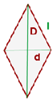

General Area Calculator
Rombo
A = (D · d)⁄2 -> El área es igual a la mitad del producto de la diagonal mayor por la diagonal menor.
El rombo es un cuadrilátero paralelogramo cuyos cuatro lados son de igual longitud.
Los ángulos interiores opuestos son iguales. Sus diagonales son perpendiculares entre sí y cada una divide a la otra en partes iguales (esta característica por sí sola también define al rombo).